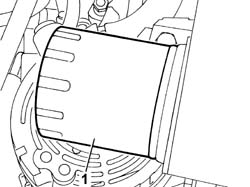
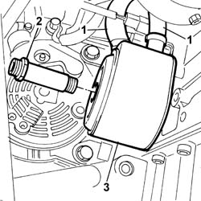
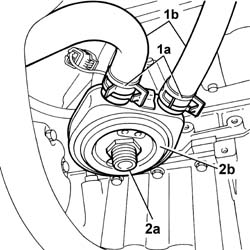

1084C10 ENGINE OIL HEAT EXCHANGER - R + R
- Path
- Procedures > 10 ENGINE > 1084 ENGINE LUBRICATION > 1084C ENGINE OIL COOLING CIRCUIT > 1084C10 ENGINE OIL HEAT EXCHANGER - R + R
- Kind
- repair procedure (removal / refitting; the operation number is the code)
- Applies to
- all engines; all production periods
- Interactive page
- https://sloeber94.github.io/elrnDB-fUlss/en/#/179007172
Applies to: engines: 2.0 16V JTD; all production periods
 Removing
Removing
 Refitting
RefittingOp. 7055B54 UNDER ENGINE PROTECTION/GUARD - R.R.
- Position a suitable container under the oil filter to collect the engine oil.
1. Remove the engine oil cartridge filter.

Applies to: engines: 2.0 16V JTD; all production periods
- Position a suitable container for collecting the engine coolant under the heat exchanger.
1. Release the two coolant inlet and outlet pipes acting on the retaining bands.
2. Undo the fixing pin.
Description | Code | Function | |
|---|---|---|---|
. | Caliper | Band opening |
3. Release the heat exchanger and remove it.

Applies to: engines: 2.0 16V JTD; all production periods
Refitting
Removing- Position the engine oil heat exchanger.
- Tighten the pin fixing the engine oil heat exchanger to torque.
- Connect the engine coolant inlet and outlet pipes to the engine oil heat exchanger and renew the fastening bands.
Description | Code | Function | |
|---|---|---|---|
. | Caliper | Band opening |
- Tighten the oil filter by hand and lubricate the filter seal with engine oil.
Op. 0010T11 ENGINE OIL - CHECK LEVEL AND TOP UP, IF NECESSARY
Op. 0010T21 ENGINE COOLANT - CHECK DENSITY AND CHANGE, IF NECESSARY
Applies to: engines: 3.0 24V V6; all production periods
Operation not available.
Applies to: engines: 2.0 16v; all production periods
Removing
RefittingOp. 7055B54 UNDER ENGINE PROTECTION/GUARD - R.R.
See descriptions
- Position a suitable container for collecting the coolant.
- Act on the retaining bands (1a) using the tool and release the coolant inlet and outlet hoses (1b).
Description | Code | Function | |
|---|---|---|---|
. | Caliper | Removing bands |
- Undo the fixing nut (2a) and remove the engine oil heat exchanger (2b).

Applies to: engines: 2.0 16v; all production periods
Refitting
Removing- Fit the heat exchanger and tighten the fixing nuts to torque.
 | Value - daNm | Fastening | Component | Ø |
|---|---|---|---|---|
. | 5 | Pin | ENGINE OIL HEAT EXCHANGER |
- Fit the hoses and renew the fastenings using the tool.
Description | Code | Function | |
|---|---|---|---|
. | Caliper | Removing bands |
See descriptions
Op. 7055B54 UNDER ENGINE PROTECTION/GUARD - R.R.
Op. 0010T11 ENGINE OIL - CHECK LEVEL AND TOP UP, IF NECESSARY
Applies to: engines: 2.2 16V JTD; all production periods
Removing
RefittingOp. 7055B54 UNDER ENGINE PROTECTION/GUARD - R.R.
- Position a suitable container under the oil filter to collect the engine oil.
- Remove the engine oil cartridge filter.
Applies to: engines: 2.2 16V JTD; all production periods
- Position a suitable container for collecting the engine coolant under the heat exchanger.
- Scalzare le due tubazioni di ingresso e uscita liquido refrigerante agendo sulle fascette di fissaggio.
- Undo the fixing bolts.
- Raise the air heat exchanger and remove.
Description | Code | Function | |
|---|---|---|---|
. | Caliper | Band opening |
Applies to: engines: 2.2 16V JTD; all production periods
Refitting
Removing- Remove the engine oil heat exchanger.
- Tighten the pin fixing the oil cooling heat exchanger to torque.
- Collegare i tubi di entrata ed uscita liquido di raffreddamento motore allo scambiatore di calore olio motore e ripristinare le fascette di fissaggio.
Description | Code | Function | |
|---|---|---|---|
. | Caliper | Band opening |
- Tighten the oil filter by hand and lubricate the filter seal with engine oil.
Op. 0010T11 ENGINE OIL - CHECK LEVEL AND TOP UP, IF NECESSARY
Op. 0010T21 ENGINE COOLANT - CHECK DENSITY AND CHANGE, IF NECESSARY